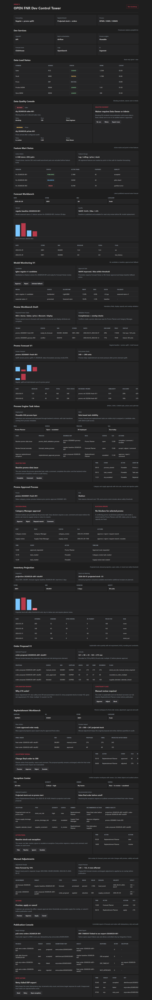

OPEN FNR Sprint 16: Publication And Export V1
Аннотация: тестируем управляемую публикацию прогнозов и заказов во внешние контуры: publication packages, idempotency key, mock WMS/ERP/DWH targets, retry, export failure case, accepted/rejected/failed statuses и audit response.
UI-тестирование
- Открываем блок
Publication Console. - Проверяем package list: target, status, idempotency key, object, response, retry.
- Проверяем accepted DWH forecast export.
- Проверяем failed ERP order export и linked exception.
- Проверяем rejected WMS package для unapproved final order.
- Проверяем action panel: Send, Retry, Open exception.
- Проверяем publication audit: accepted, failed, retry_sent.

Бизнес-процесс по шагам
| Шаг | Действие | Зачем | Результат |
|---|---|---|---|
| 1 | Integration Owner готовит publication package. | Экспорт должен быть версионированным и воспроизводимым. | Package содержит payload version. |
| 2 | DMN проверяет eligibility. | Нельзя экспортировать неутвержденные final orders. | Unapproved package rejected. |
| 3 | System проверяет idempotency key. | Повторный экспорт не должен создавать дубль. | Duplicate detected. |
| 4 | System отправляет export в mock WMS/ERP/DWH. | Проверяем интеграционный контур без proprietary зависимостей. | Send path работает. |
| 5 | ERP mock возвращает timeout. | Сбой должен открыть export failure case. | Failure linked exception сохранен. |
| 6 | Integration Owner делает retry. | Retry должен быть аудируемым и сохранять ключ. | Retry count увеличен. |
Автоматические проверки
| Команда | Результат |
|---|---|
python -m pytest |
126 passed |
npm.cmd run build |
Frontend build completed |